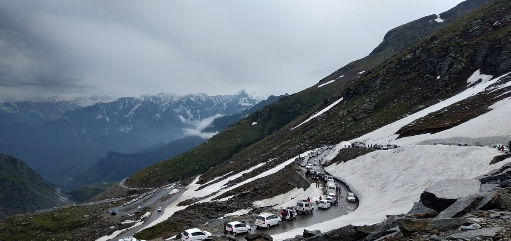

Travelling destinations
ManaliManali is a high-altitude Himalayan resort town in India’s northern Himachal Pradesh state. It has a reputation as a backpacking center and honeymoon destination. Set on the Beas River, it’s a gateway for skiing in the Solang Valley and trekking in Parvati Valley. It's also a jumping-off point for paragliding, rafting and mountaineering in the Pir Panjal mountains, home to 4,000m-high Rohtang Pass.
Rohtang Pass
Rohtang Pass is one of the most spectacular natural delights in India. It serves as a gateway to the picturesque Spiti valley home to the famous Pin Valley National Park and numerous Buddhist Monasteries. The pass is inaccessible during winters, but visitors are allowed during summers once they have obtained the necessary permits. Once you enter the pass, you will immediately notice a transformation in the landscape, and you will come back spellbound and mesmerised by the raw and untouched beauty of the region.There are many Tourist places in Rohtang Pass, here we have listed down all of them for you. There are no Hotels in Rohtang Pass, but the locals run cosy homestays for the visitors. And if you want to stay at a Resort in Rohtang Pass, then you will find some excellent options in Manali.